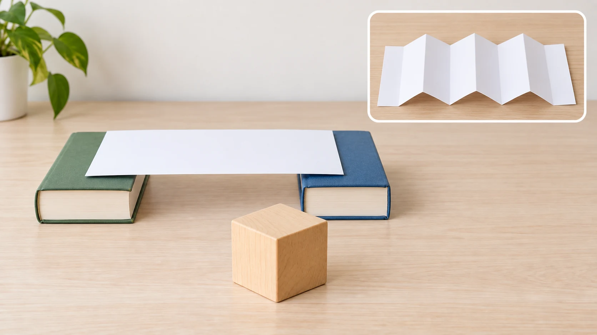

Build · test · change
Paper Bridge Challenge for Kids
Can one sheet of paper span two books? Start flat, then fold the same kind of sheet and compare what changes.
Fit and start
Try it when: your child can place a large object gently and follow a stop cue. An adult can hold the paper for a child who is still learning to fold.
Get: one sheet of paper, two low closed books, and one large lightweight block or soft toy.
- Adult: put the books flat with a small gap between them.
- Child: lay the paper across the gap, then place the object gently in the middle.
Stop: if the books slide, the object is thrown, paper goes in a mouth, paper tears, or the setup becomes climbing play. Remove loose paper pieces before continuing.

Run the first try
- Put two broad closed books flat on the floor or a low table. Leave a gap shorter than the paper.
- Lay one sheet across the books so both ends rest well on the covers.
- Ask, “What do you think the paper will do?” A guess is optional.
- Place one large lightweight object gently near the middle. Watch whether the paper stays level, bends, or slips.
- Remove the object before changing the bridge.
Change only the paper shape
Use a fresh sheet of the same size, or flatten the first sheet as well as you can. Keep the same books, gap, object, and placement. Fold the paper into broad back-and-forth ridges, then span the books again.
Try 1: flat
Lay the sheet flat. Place the object gently near the middle. Name what you can see: level, bending, slipping, or falling.
Try 2: folded
Make four to six broad accordion folds. Use the same gap and object. Compare what you see without promising which version will hold.
Parent phrase: “We changed the paper shape. What stayed the same?” If the child wants free building instead, let the comparison end and keep making bridges.
If the bridge is not working
- The paper falls
- Move the books closer so more paper rests on each cover. Test the empty bridge before adding the object.
- The books slide
- Stop. Move to a rug or another nonslip, floor-level spot. Do not ask a child to hold a support while another child tests.
- Folds open up
- Make fewer, broader folds and press each crease. An adult can hold the ends in place without adding tape.
- The object keeps rolling
- Choose a large soft toy or a wide block with a flat base. Skip cars, coins, and marbles for the default test.
- The child is done
- End the comparison. Let the bridge become pretend play, or flatten the paper and clean up. Finishing every step is not required.
Adapt the job, not the outcome
With a younger child nearby
Use one large soft toy as the only test object. Keep spare materials out of reach. The adult places and removes the object if gentle placement is not reliable.
If folding is hard
The adult can start each crease while the child presses it, or hold a pre-folded sheet while the child chooses where the books go. This changes the motor job, not the comparison.
Specific sensory preferences and assistive-technology needs were not established by this research. Adjust sound, touch, posture, and participation with the child in front of you rather than treating the age label as a complete fit decision.
Reset and clean up
Remove the test object first. Put the books away, then flatten the paper for drawing or recycling. Check the floor for torn pieces before a younger child returns to the area.
What this guide knows
Kid Activity Lab built this guide from current activity references, early-childhood inquiry guidance, and editorial synthesis. Kid Activity Lab has not recorded a family test of this setup. Exact duration, mess, comprehension, engagement, enjoyment, learning, repeatability, frustration, and safety outcomes are unknown.
Head Start supports adult-guided preschool observation, comparison, prediction, and bridge investigations. TERC describes early engineering as asking, imagining, planning, creating, testing, and improving. Those sources do not test Kid Activity Lab's exact two-book setup or prove an outcome for a particular child.